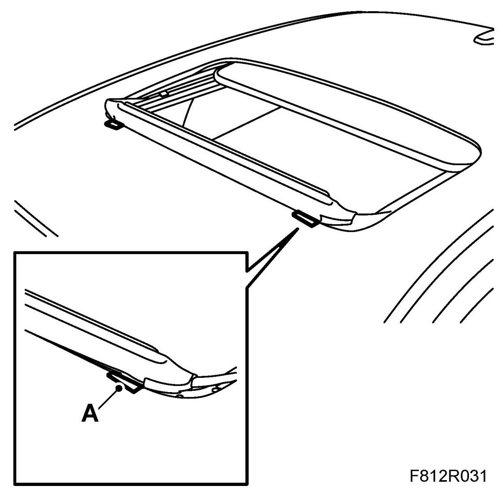
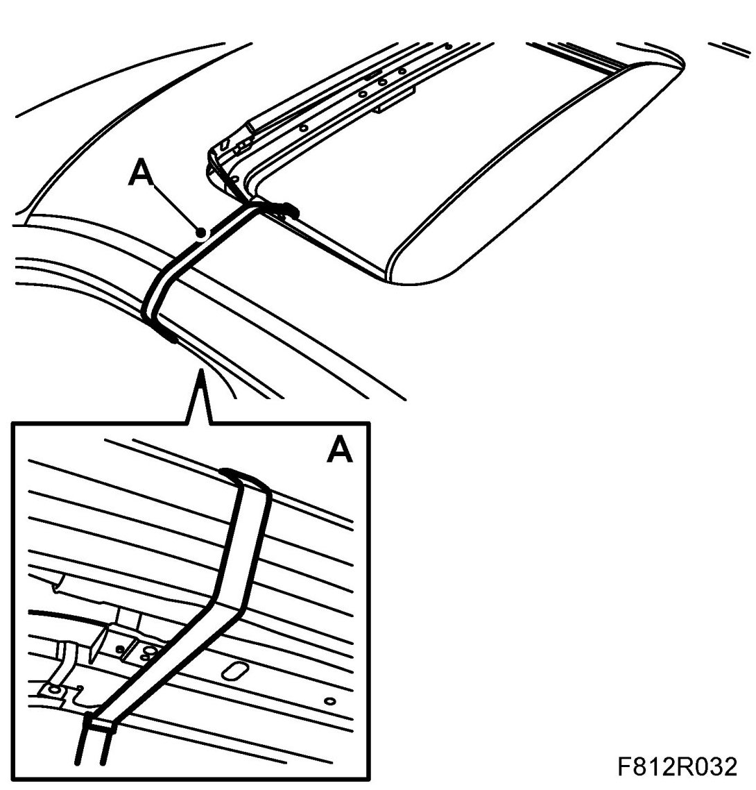
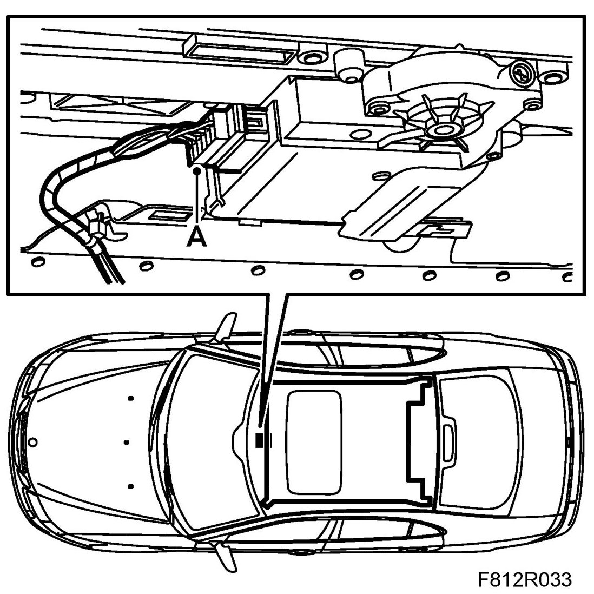
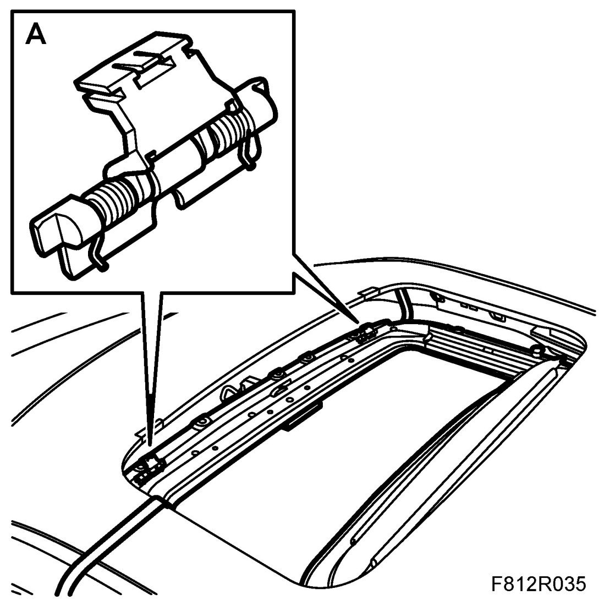
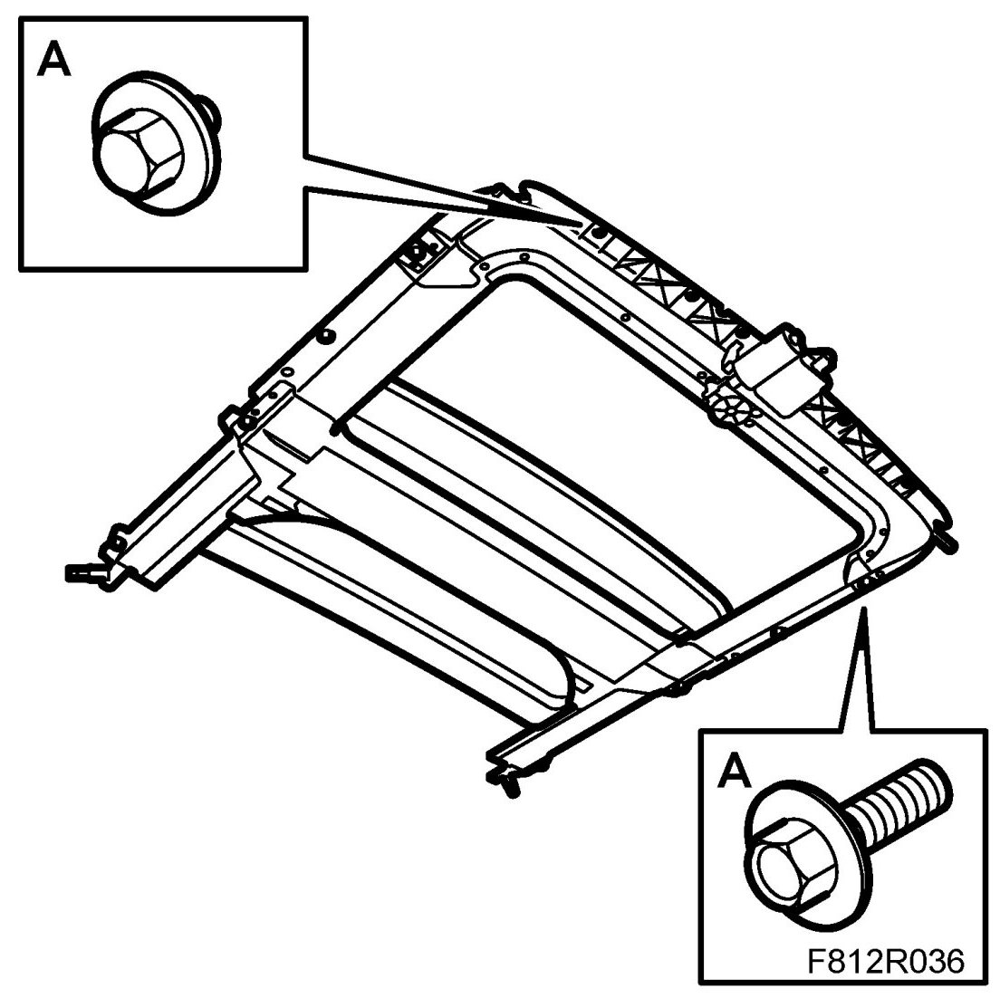
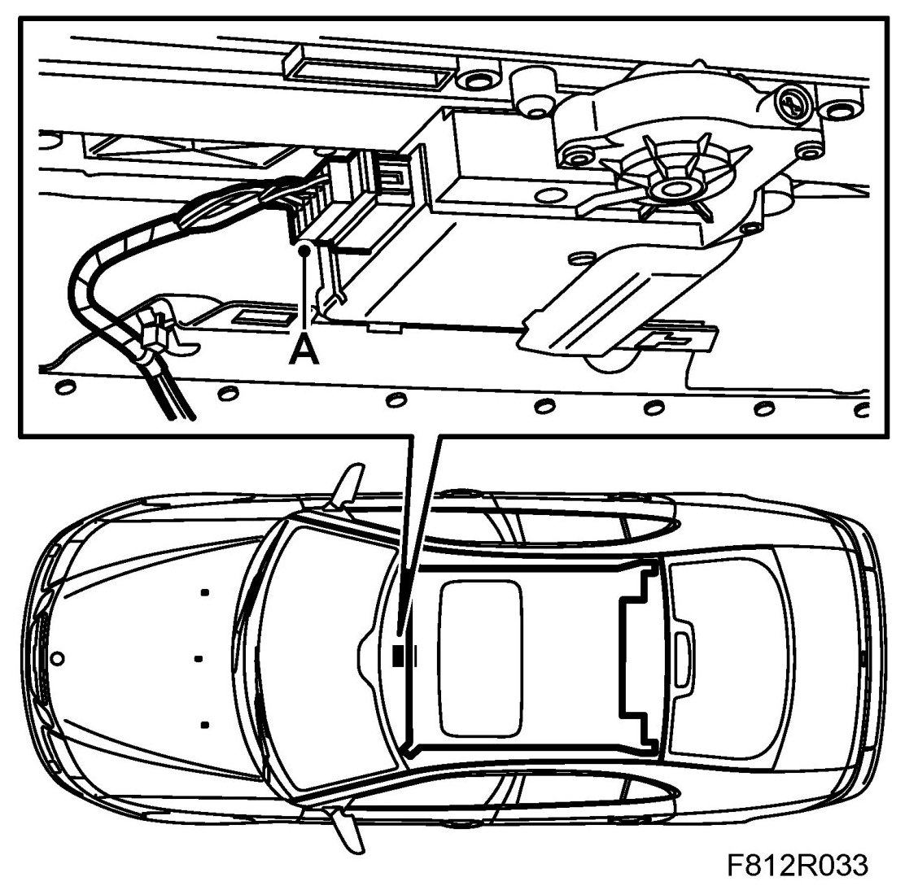
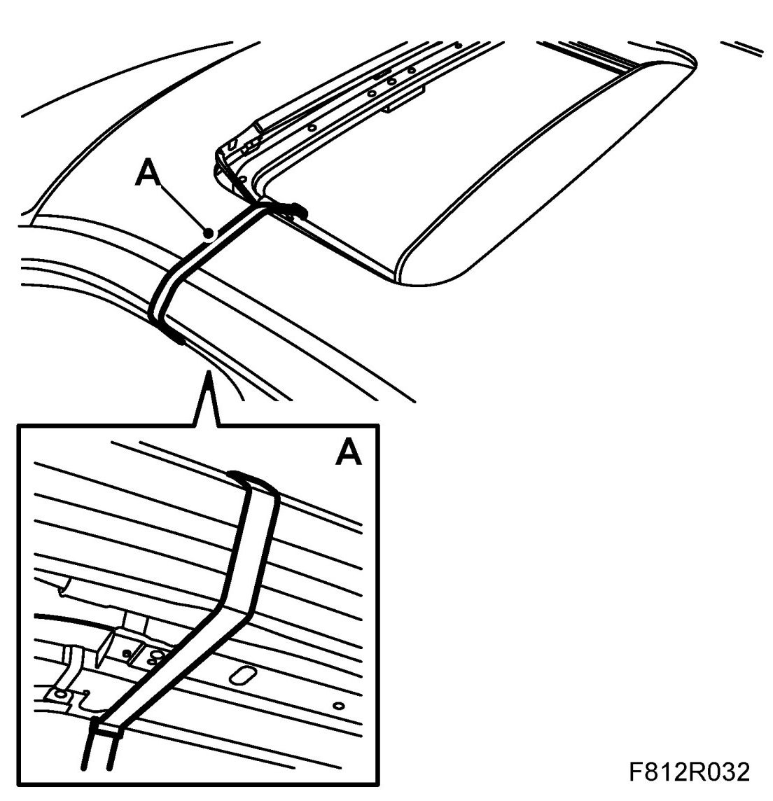
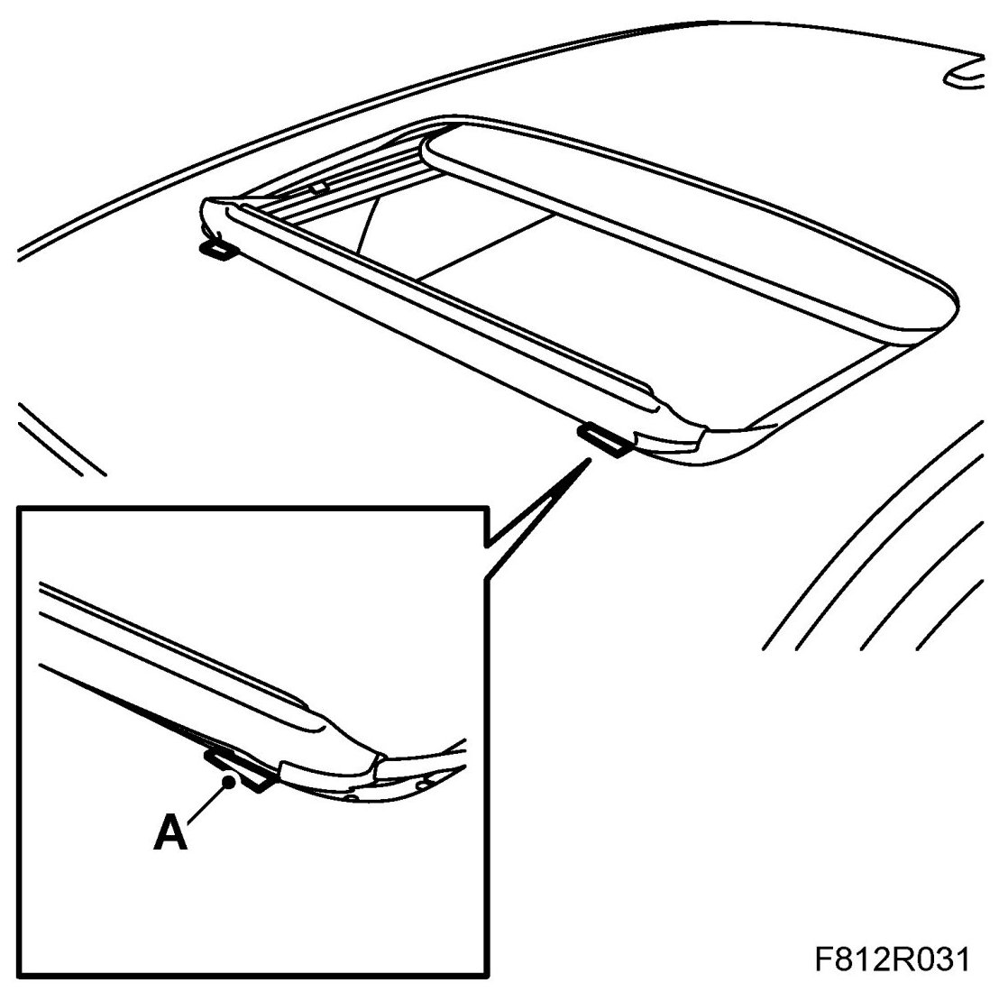

Hinge, Wind Deflector, Sunroof
Hinge, Wind Deflector, Sunroof
To remove
1. Remove the headlining. See Headlining, 4D. Headlining, 4D, US/CA. Headlining, 5D.
2. Remove the wind deflector. See Wind deflector.
NOTE: Affix a small piece of tape (A) to the edge of the roof in front of the hinges before removing the wind deflector.

3. Tension and cable tie (A) around the sunroof assembly and the roof.

4. Unplug the connector from the sunroof motor (A).

5. Remove the 11 screws (A) for the sunroof assembly, allow the 2 rear screws (B) to remain. Note the position of the screws.
6. Untension the cable tie until the hinge can be removed.
7. Remove the hinge (A).
To fit
1. Carefully press the hinge (A) into the correct position in the groove.

2. Lift up the sunroof assembly and fit the screws (A) x 11.

- Take care that the hinges do not become trapped.
- Note the screw positions.
3. Plug in the connector for the sunroof motor.

4. Remove the cable tie (A).

5. Fit the wind deflector. See Wind deflector .
6. Remove the tape (A).

7. Fit the headlining. See Headlining, 4D. Headlining, 4D, US/CA. Headlining, 5D.